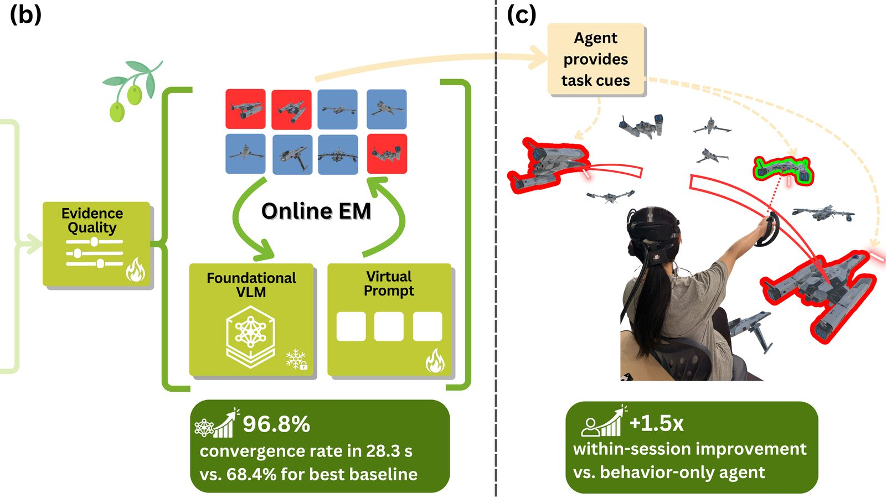

Augmenting Human Performance with an XR Agent Learning from Online Behavior and BCI Evidence
ACM Symposium on User Interface Software and Technology (UIST), 2026. To appear.

Cite
Z. Li, X. He, H. Chen, C. Zou, S. Bai, B. Yang, M. Wu, J. Ledner, Y.-J. Cheng, A. Yamauchi, D. G. Turakhia, S. Feiner, and P. Sajda, “Augmenting Human Performance with an XR Agent Learning from Online Behavior and BCI Evidence,” in Proc. ACM Symposium on User Interface Software and Technology (UIST), 2026, to appear.
@inproceedings{li2026xragent,
title={Augmenting Human Performance with an XR Agent Learning from Online Behavior and BCI Evidence},
author={Li, Z. and He, X. and Chen, H. and Zou, C. and Bai, S. and Yang, B. and Wu, M. and Ledner, J. and Cheng, Y.-J. and Yamauchi, A. and Turakhia, D. G. and Feiner, S. and Sajda, P.},
booktitle={2026 ACM Symposium on User Interface Software and Technology (UIST)},
year={2026}
}